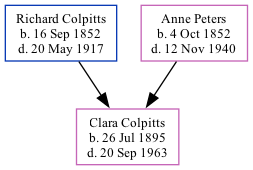

Clara Agnes Colpitts 1895 - 1963
[ Home ] | [ Calendar ] | [ Surnames Index ] | [ Family History ]The youngest of 8 children of Richard Colpitts and Anne Peters, Clara Colpitts, the third cousin twice-removed on the father's side of <a href="I1.html">Nigel Horne</a>, was born in Elgin, Albert, New Brunswick, Canada on Jul 26, 1895<span class="citation">1</span>. In 1901, she lived at her birthplace<span class="citation">2</span>. <p>She died on Sep 20, 1963.
Parents
- Richard Byron was born on Sep 16, 1852
- Anne Atkinson was born on Oct 4, 1852
Citations
- 1901 Census of Canada Ancestry.com Operations Inc
- Canada Census 1901 - Findmypast (was the daughter of the head of the household Marital Status: Single; Relation to Head of House: Daughter)
Media
Canada Census 1911 Transcription - CAN-CENSUS-1911-01528104
Canada Census 1901 - CAN/CENSUS/1901/00422883
Family Tree
Generated by Ged2Site. Last updated on Jul 20, 2025